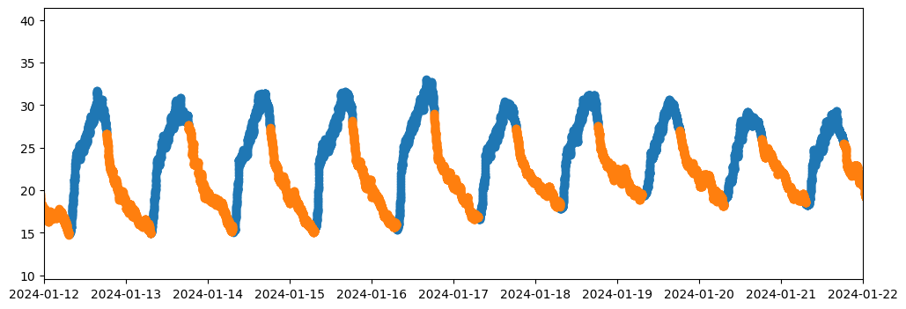
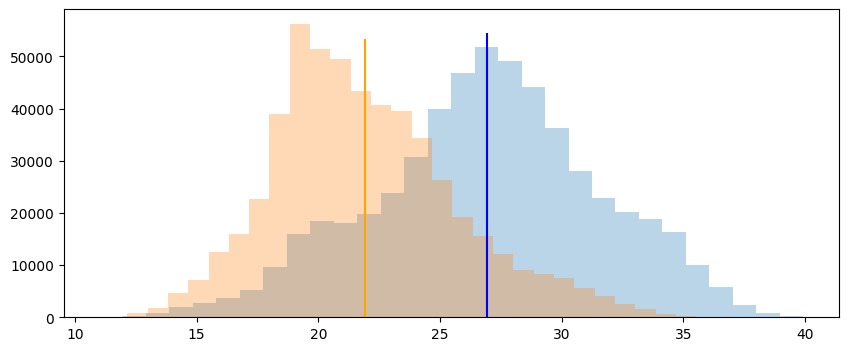
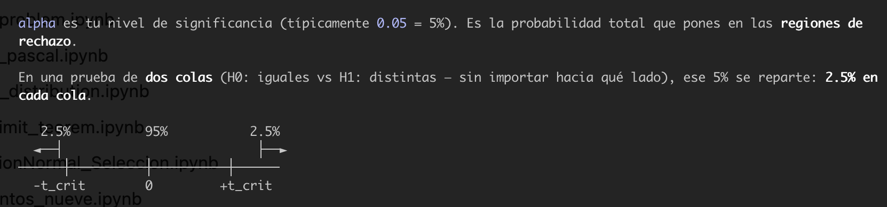
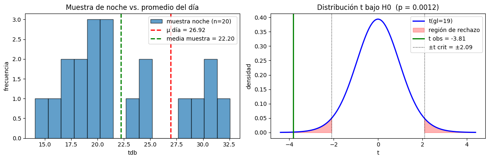
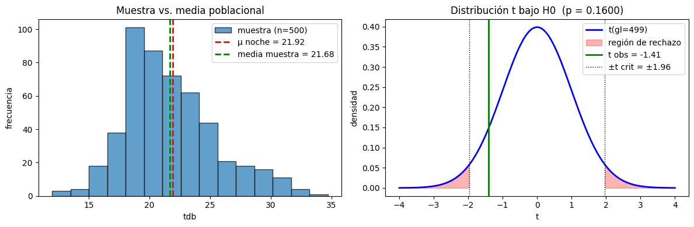

import pandas as pd
import matplotlib.pyplot as plt
from dateutil.parser import parse
from scipy import stats
import numpy as np11 ax.plot(noche.tdb)
f = '../data/ClimaLab_2023-05-31_2025-06-20.parquet'
tdb = pd.read_parquet(f,columns=['tdb','solar_altitude'])
dia = tdb[tdb.solar_altitude>=0]
noche = tdb[tdb.solar_altitude<0]
noche| variable | tdb | solar_altitude |
|---|---|---|
| date | ||
| 2023-05-31 19:09:00 | 27.50 | -0.085744 |
| 2023-05-31 19:10:00 | 27.53 | -0.271267 |
| 2023-05-31 19:11:00 | 27.53 | -1.003378 |
| 2023-05-31 19:12:00 | 27.58 | -1.219907 |
| 2023-05-31 19:13:00 | 27.60 | -1.436298 |
| ... | ... | ... |
| 2025-06-19 23:56:00 | 18.88 | -46.462932 |
| 2025-06-19 23:57:00 | 18.89 | -46.520379 |
| 2025-06-19 23:58:00 | 18.87 | -46.576532 |
| 2025-06-19 23:59:00 | 18.87 | -46.631386 |
| 2025-06-20 00:00:00 | 18.87 | -46.684936 |
532481 rows × 2 columns
fig, ax = plt.subplots(figsize=(12,4))
f1 = parse('01-12-2024')
f2 = f1 + pd.Timedelta('10D')
ax.scatter(dia.index,dia.tdb)
ax.scatter(noche.index,noche.tdb)
ax.set_xlim(f1,f2)
print(len(dia),len(noche))544287 532481fig, ax = plt.subplots(figsize=(10,4))
ax.hist(dia.tdb, alpha=0.3, bins = 30,);
ax.hist(noche.tdb, alpha=0.3, bins = 30);
ax.vlines(dia.tdb.mean(),ymin=0,ymax=len(dia.tdb)/10,colors='blue')
ax.vlines(noche.tdb.mean(),ymin=0,ymax=len(noche.tdb)/10,colors='orange')
\[ t = \frac{\bar{x} - \mu_0}{s / \sqrt{n}} \]
donde: - \(\bar{x}\) = media de muestra_noche - \(\mu_0\) = mu_dia (el valor con el que comparas) - \(s\) = desviación estándar de la muestra - \(n\) = tamaño de muestra
Intuitivamente: “¿cuántos errores estándar separan mi media muestral del promedio del día?”
¿Qué significa que sea negativo?
El signo sólo indica dirección:
- t_stat < 0 → la media de tu muestra de noche es menor que mu_dia (lo esperable: de noche hace más frío que de día).
- t_stat > 0 → sería mayor.
- t_stat ≈ 0 → prácticamente iguales.
¿Y el p-valor?
n = 2
muestra_noche = noche['tdb'].sample(n)
mu_dia = dia['tdb'].mean()
# H0: la media de la muestra de noche es igual al promedio del día
t_stat, p_valor = stats.ttest_1samp(muestra_noche, popmean=mu_dia)
t_stat, p_valor(np.float64(-7.952420765844685), np.float64(0.0796355913243386))
11.0.0.1 stats.t.ppf(1 - alpha/2, gl)
Devuelve el valor crítico \(t_{\text{crit}}\) de la distribución t: el umbral que separa la región de no rechazo de las colas de rechazo en una prueba de dos colas.
\[ gl = n - 1, \qquad P(T \leq t_{\text{crit}}) = 1 - \tfrac{\alpha}{2} \]
Deja \(\alpha/2\) de probabilidad en cada cola.
Estadístico observado:
\[ t = \frac{\bar{x} - \mu_0}{s / \sqrt{n}} \]
Decisión: se rechaza \(H_0\) si \(|t| > t_{\text{crit}}\).
\(t_{\text{crit}}\) está en unidades de error estándar (\(s/\sqrt{n}\)).
n = 2
def evalua(n):
muestra_noche = noche['tdb'].sample(n)
mu_dia = dia['tdb'].mean()
# H0: la media de la muestra de noche es igual al promedio del día
t_stat, p_valor = stats.ttest_1samp(muestra_noche, popmean=mu_dia)
alpha = 0.05
print(f'promedio día: {mu_dia:.3f}')
print(f'media muestra noche (n={n}): {muestra_noche.mean():.3f}')
print(f't = {t_stat:.3f}, p = {p_valor:.4f}')
print('Rechazamos H0 (son distintas)' if p_valor < alpha else 'No rechazamos H0 (estadísticamente iguales)')
gl = n - 1
t_critico = stats.t.ppf(1 - alpha/2, gl)
lim = max(4, abs(t_stat), t_critico) * 1.1
x = np.linspace(-lim, lim, 600)
y = stats.t.pdf(x, gl)
fig, (ax1, ax2) = plt.subplots(1, 2, figsize=(12, 4))
ax1.hist(muestra_noche, bins=15, edgecolor='k', alpha=0.7, label=f'muestra noche (n={n})')
ax1.axvline(mu_dia, color='red', ls='--', lw=2, label=f'μ día = {mu_dia:.2f}')
ax1.axvline(muestra_noche.mean(), color='green', ls='--', lw=2,
label=f'media muestra = {muestra_noche.mean():.2f}')
ax1.set_xlabel('tdb'); ax1.set_ylabel('frecuencia')
ax1.set_title('Muestra de noche vs. promedio del día')
ax1.legend()
ax2.plot(x, y, 'b-', lw=2, label=f't(gl={gl})')
ax2.fill_between(x, y, where=(x <= -t_critico), color='red', alpha=0.3, label='región de rechazo')
ax2.fill_between(x, y, where=(x >= t_critico), color='red', alpha=0.3)
ax2.axvline(t_stat, color='green', lw=2, label=f't obs = {t_stat:.2f}')
ax2.axvline( t_critico, color='k', ls=':', lw=1)
ax2.axvline(-t_critico, color='k', ls=':', lw=1, label=f'±t crit = ±{t_critico:.2f}')
ax2.set_xlabel('t'); ax2.set_ylabel('densidad')
ax2.set_title(f'Distribución t bajo H0 (p = {p_valor:.4f})')
ax2.legend()
plt.tight_layout(); plt.show()evalua(n=20)promedio día: 26.919
media muestra noche (n=20): 22.203
t = -3.814, p = 0.0012
Rechazamos H0 (son distintas)
11.1 Puedo comparar un conjunto de datos de la noche, con la noche ?
n = 5
def evalua_noche(n):
muestra_noche = noche['tdb'].sample(n)
# H0: la media de la muestra es igual a la media poblacional de noche
mu_noche = noche['tdb'].mean()
t_stat, p_valor = stats.ttest_1samp(muestra_noche, popmean=mu_noche)
alpha = 0.05
print(f'media poblacional noche: {mu_noche:.3f}')
print(f'media muestra (n={n}): {muestra_noche.mean():.3f}')
print(f't = {t_stat:.3f}, p = {p_valor:.4f}')
print('Rechazamos H0 (son distintas)' if p_valor < alpha else 'No rechazamos H0 (estadísticamente iguales)')
gl = n - 1 # grados de libertad
t_critico = stats.t.ppf(1 - alpha/2, gl)
# eje x para la distribución t bajo H0
x = np.linspace(-4, 4, 400)
y = stats.t.pdf(x, gl)
fig, (ax1, ax2) = plt.subplots(1, 2, figsize=(12, 4))
# --- 1) histograma de la muestra vs. media poblacional ---
ax1.hist(muestra_noche, bins=15, edgecolor='k', alpha=0.7, label=f'muestra (n={n})')
ax1.axvline(mu_noche, color='red', ls='--', lw=2, label=f'μ noche = {mu_noche:.2f}')
ax1.axvline(muestra_noche.mean(), color='green', ls='--', lw=2,
label=f'media muestra = {muestra_noche.mean():.2f}')
ax1.set_xlabel('tdb'); ax1.set_ylabel('frecuencia')
ax1.set_title('Muestra vs. media poblacional')
ax1.legend()
# --- 2) distribución t bajo H0 con regiones de rechazo ---
ax2.plot(x, y, 'b-', lw=2, label=f't(gl={gl})')
ax2.fill_between(x, y, where=(x <= -t_critico), color='red', alpha=0.3, label='región de rechazo')
ax2.fill_between(x, y, where=(x >= t_critico), color='red', alpha=0.3)
ax2.axvline(t_stat, color='green', lw=2, label=f't obs = {t_stat:.2f}')
ax2.axvline( t_critico, color='k', ls=':', lw=1)
ax2.axvline(-t_critico, color='k', ls=':', lw=1, label=f'±t crit = ±{t_critico:.2f}')
ax2.set_xlabel('t'); ax2.set_ylabel('densidad')
ax2.set_title(f'Distribución t bajo H0 (p = {p_valor:.4f})')
ax2.legend()
plt.tight_layout(); plt.show()evalua_noche(n=500)media poblacional noche: 21.922
media muestra (n=500): 21.684
t = -1.407, p = 0.1600
No rechazamos H0 (estadísticamente iguales)